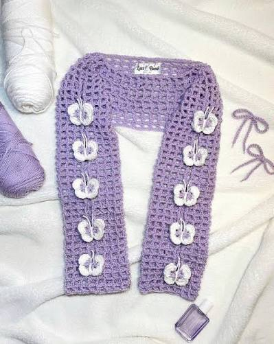

Complete Beginner's Guide
Everything you need to know before making your first crochet project.
Getting Started
Before you make your first stitch, let's get you ready.
What is Crochet?
Crochet is a craft that uses a hook and yarn to create fabric by working loops of yarn together.
What Do I Need?
You don't need much to get started! A crochet hook, yarn, scissors, and a tapestry needle are enough to begin learning.
Explore Supplies →How to Hold Your Hook & Yarn
Before making your first stitch, learn how to comfortably hold your hook and control your yarn.
Watch Tutorial →
First Steps
Ready to start crocheting? Follow these steps in order.
Basic Stitches
Start by learning the first four essential crochet stitches. Practice each one until you feel comfortable.
Learn the Stitches →Understand Patterns
Once you've practiced the stitches, learn how to read basic crochet patterns and understand common abbreviations.
Explore Patterns →Your First Project
You've learned the basics. Now it's time to put them into practice!

Flower Coaster
This simple coaster is a great first project because it lets you practice the stitches you've learned while creating something useful. Make a full set for extra practice!
Follow the pattern at your own pace, and don't worry if your first attempt isn't perfect. The goal is to practice and have fun!
View Pattern →